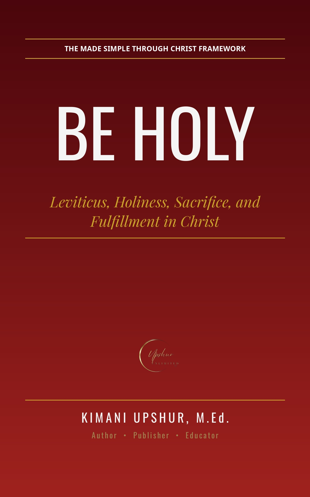

Be Holy
by Kimani Upshur, M.Ed.
Leviticus is the book Christians skip — a fence of sacrifices, purity laws, and strange rules sitting in the middle of the Bible. But the New Testament can't stop quoting it. Peter takes its central command and lays it on the church. Jesus cites its call to love your neighbor as the second greatest commandment. Hebrews builds its whole argument — priests, blood, atonement — on its pages. Be Holy walks you through all twenty-seven chapters of Leviticus and shows you why it repays the reader. The journey follows three movements you will never forget: Set Apart — what holiness is, the separateness of God and his claim on his people; Draw Near — what sacrifice and priesthood are, God's provided way for unholy people to approach a holy God; and Be Holy — what holiness does, the daily-life call echoing from Sinai to the church. From the five offerings to the ordination of the priests, from Nadab and Abihu to the Day of Atonement, from the purity laws to the Holiness Code, from the feasts to the Jubilee trumpet to the covenant's blessings and curses — every section serves the triad. This book faces the hard questions head-on and never dodges: how does a Christian relate to laws that aren't directly binding? What carries forward, and what was fulfilled in Christ? The sexual-ethics passages, the theocratic penalties, the food laws, the Sabbath — each is handled honestly, with the New Testament's own answers (Acts 15, Mark 7, Hebrews) and the church's interpretive framework named for what it is. Where the New Testament names a fulfillment, it is taught boldly; where it is silent, this book says so. No forced typology, no invented details, no softened edges. Be Holy is for the reader who wants Leviticus without the intimidation — twelve chapters, one a day, each landing in reflection and application. Whether Leviticus has bored you, confused you, or unsettled you, this walk will show you the backstory of grace: what holiness costs, what it looks like, and who finally provides it.
Get This Book
Ebook — available now on Payhip.
- Publisher
- Upshur Unlimited, LLC
- Author
- Kimani Upshur, M.Ed.
- Format
- Ebook
- Language
- English